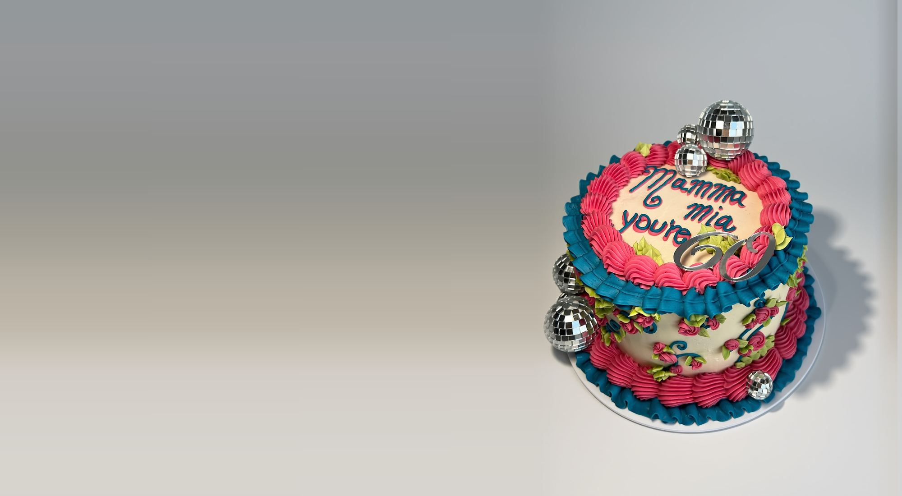
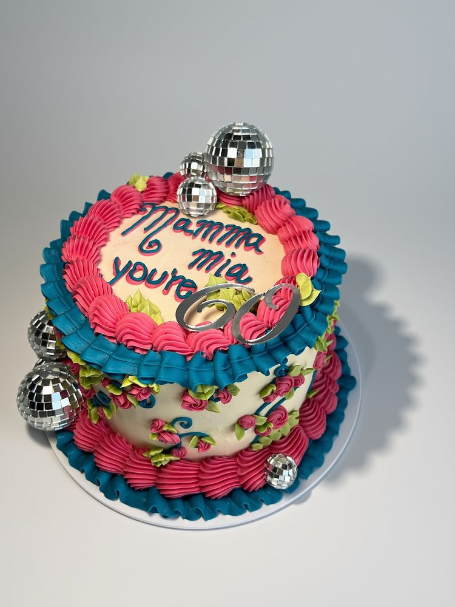
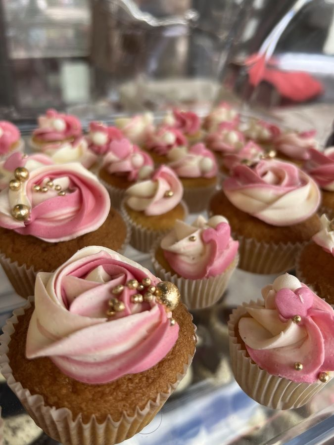
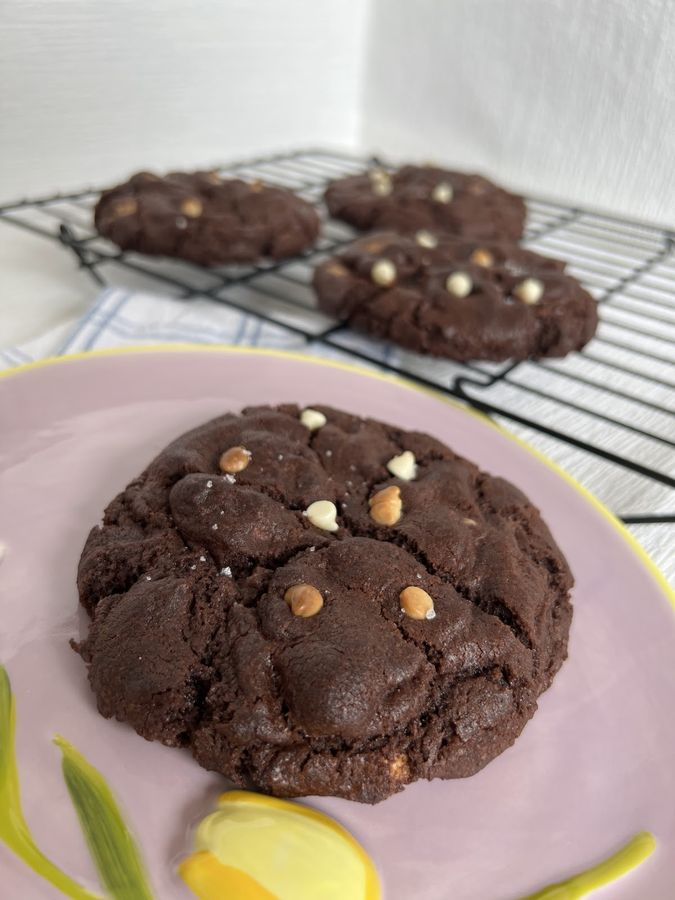
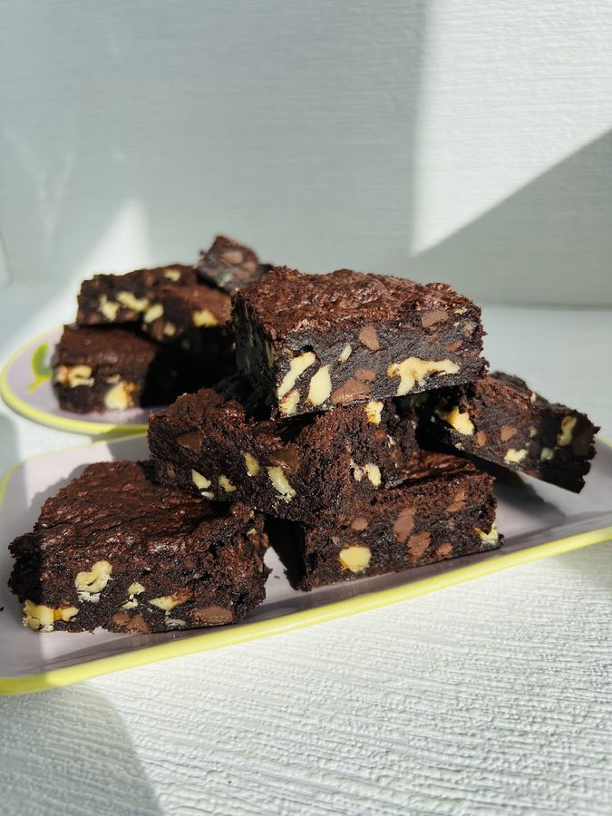
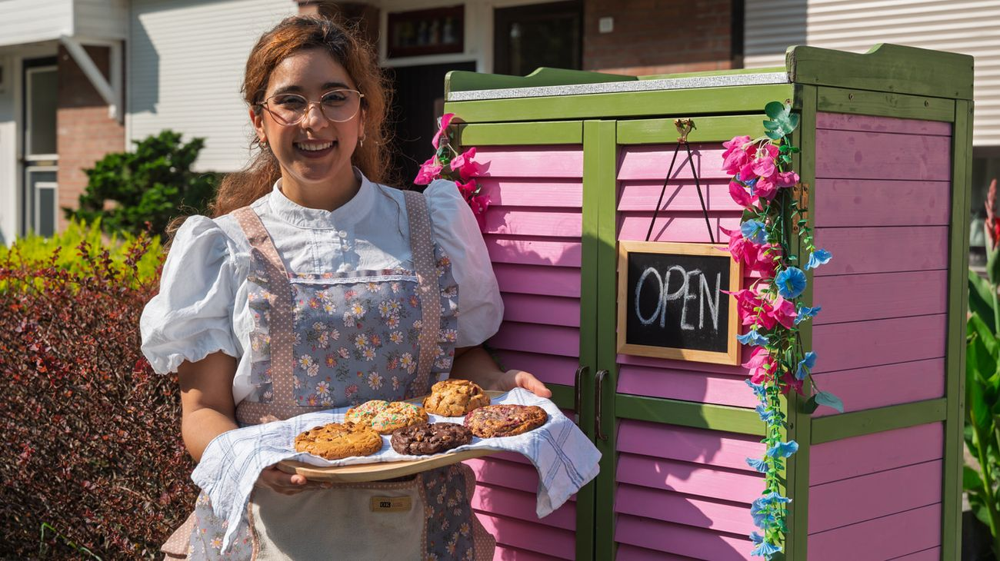
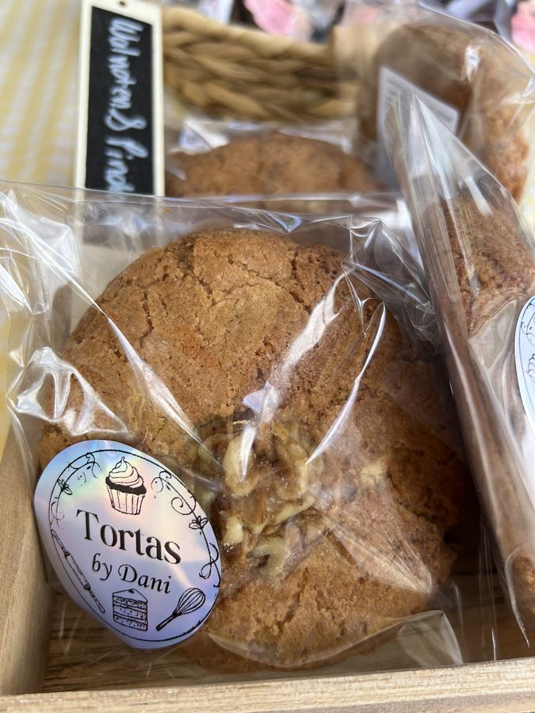

Wat je bij ons bestelt
Voor een verjaardag, een feestje of gewoon omdat je zin hebt in iets lekkers.
Taarten
Op maat, met jouw tekst

Cupcakes
Voor feestjes en uitdelen

Koeken
Steeds nieuwe smaken

Brownies
Met chocolade en noten
Ook voor taartpunten en dessertcatering op je feest kun je bij ons terecht.
Bekijk het hele aanbod
Het zoete schuurtje
Zin in iets lekkers zonder te bestellen? Aan de Dorus Rijkersstraat 13 staat ons roze schuurtje, gevuld met koeken, brownies en andere zoetigheid.
Op Instagram laten we zien wat er klaarstaat.

Over Dani
"Een kleine bakkerij met liefde voor taarten en desserts."
Tortas by Dani is de bakkerij van Daniela Crisci in Dinteloord. Ze begon in 2026 en bakt alles zelf, op bestelling. Van een taart met jouw eigen tekst tot een doos cupcakes voor op het werk.
Zo bestel je
Alles wordt op bestelling gemaakt. Laat het ons op tijd weten, dan zorgen we dat het klaarstaat.
Stuur een bericht
Via WhatsApp of telefoon: wat je wilt, voor hoeveel mensen en voor welke datum.
We maken het voor je
Smaak, kleuren en tekst stemmen we samen af. Daarna gaan we aan de slag.
Ophalen op afspraak
Je haalt je bestelling op in Dinteloord, op het moment dat we samen afspreken.
Tortas by Dani
Taarten en desserts op bestelling
Het zoete schuurtje
Bestellingen haal je op afspraak op.